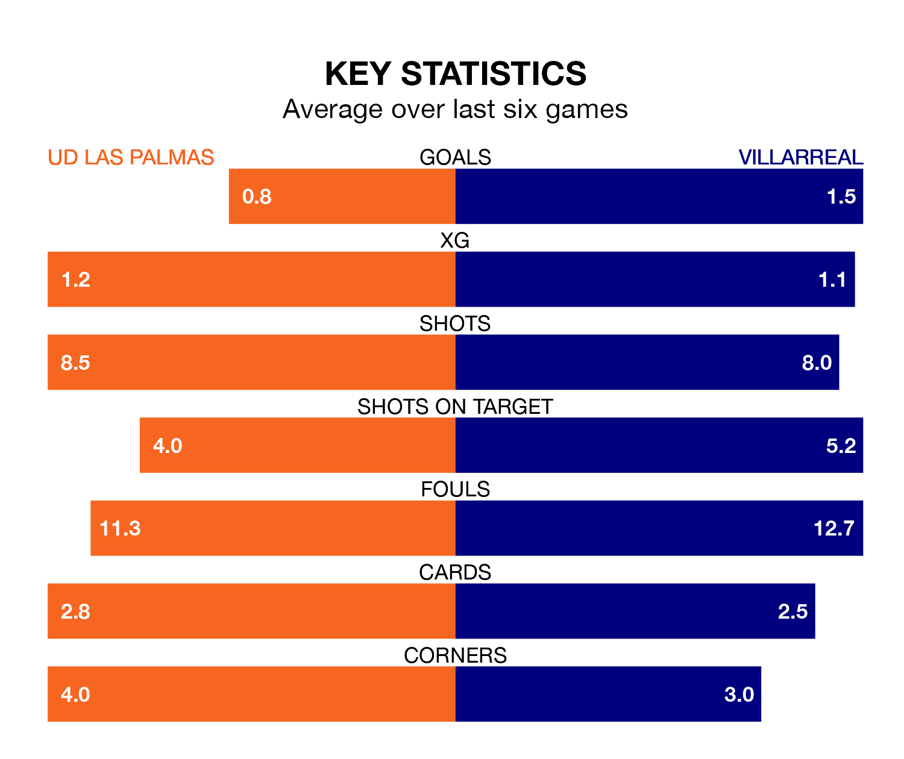

Villarreal travel to UD Las Palmas on Saturday lunchtime in La Liga.
The visitors come into the game on the back of a defeat in their last match, having lost to Valencia CF 3-1 away, with a goal from Gerard Moreno.
UD Las Palmas also lost their last match, 2-1 against FC Barcelona, with their goal scored by Munir El Haddadi.
In the last 10 years, Las Palmas and Villarreal have played each other on seven occasions. They won three each, and they drew once.
On average, UD Las Palmas scored 0.7 goals and Villarreal 1.3 in those matches.
Their last meeting was on October 8, when Las Palmas won 2-1 away.
With 16 goals in 19 games so far this season, Las Palmas are the league's third-lowest scorers with 0.8 goals per game. But they are conceding fewer than average too, letting in 17 goals at a rate of 0.9 per game.
Villarreal, meanwhile, are above average scorers, with 1.4 goals per game, compared to a league average of 1.3. They have conceded 2.0 goals per game.
The visitors' Álex Baena is among the league's most creative players, racking up five assists in 16 appearances so far this season, and holding second spot in La Liga's assist charts.
For UD Las Palmas, Marvin Park and Alberto Moleiro have set up the most goals, having laid on two assists apiece to date.
The home team are in mixed form in La Liga, with two wins and a draw from their last six games.
And also with two wins and a draw over that period, Villarreal's form is identical – they have both taken seven points from 18.
Villarreal are 13th in the table after 19 games, of which they have won five and drawn four, earning 19 points.
Las Palmas are three places ahead of the away side in 10th, with seven wins and four draws putting them on 25 points.
Updated: 11:29, 08/01/24